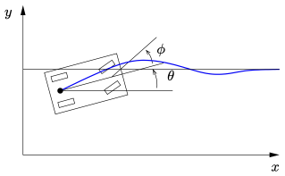

Discrete Time Sensor Fusion¶
RMM, 24 Feb 2022
In this example we work through estimation of the state of a car changing lanes with two different sensors available: one with good longitudinal accuracy and the other with good lateral accuracy.
All calculations are done in discrete time, using both a Kalman filter formulation and predictor-corrector form.
[1]:
import numpy as np
import scipy as sp
import matplotlib.pyplot as plt
import control as ct
import control.optimal as opt
import control.flatsys as fs
from IPython.display import Image
# Define line styles
ebarstyle = {'elinewidth': 0.5, 'capsize': 2}
xdstyle = {'color': 'k', 'linestyle': '--', 'linewidth': 0.5,
'marker': '+', 'markersize': 4}
System definition¶
We consider a bicycle model for an automobile:

Continuous time model¶
The dynamics are given by
\begin{aligned} \dot x &= \cos\theta \, v, \qquad \dot y &= \sin\theta \, v, \qquad \dot \theta &= \frac{v}{l} \tan\phi, \end{aligned}
where (x, y, \theta) are the position and orientation of the vehicle, v is the forward velocity, \phi is the steering wheel angle, and l is the wheelbase.
These dynamics are included in the file vehicle.py:
[2]:
# Vehicle steering dynamics
#
# System state: x, y, theta
# System input: v, phi
# System output: x, y
# System parameters: wheelbase, maxsteer
#
from vehicle import vehicle, plot_lanechange
print(vehicle)
<FlatSystem>: vehicle
Inputs (2): ['v', 'delta']
Outputs (3): ['x', 'y', 'theta']
States (3): ['x', 'y', 'theta']
Update: <function _vehicle_update at 0x16603bd90>
Output: <function _vehicle_output at 0x16605c0d0>
Forward: <function _vehicle_flat_forward at 0x10dba2f80>
Reverse: <function _vehicle_flat_reverse at 0x16603bd00>
This system is differentially flat and so we can define a trajectory for the system using the flatsys module. We generate a motion that corresponds to changing lanes on a road:
[3]:
# Generate a trajectory for the vehicle
# Define the endpoints of the trajectory
x0 = [0., -2., 0.]; u0 = [10., 0.]
xf = [40., 2., 0.]; uf = [10., 0.]
Tf = 4
# Find a trajectory between the initial condition and the final condition
traj = fs.point_to_point(vehicle, Tf, x0, u0, xf, uf, basis=fs.PolyFamily(6))
# Create the desired trajectory between the initial and final condition
Ts = 0.1
# Ts = 0.5
T = np.arange(0, Tf + Ts, Ts)
xd, ud = traj.eval(T)
plot_lanechange(T, xd, ud)
Discrete time system model¶
For the model that we use for the Kalman filter, we take a simple discretization using the approximation that \dot x = (x[k+1] - x[k])/T_s where T_s is the sampling time.
[4]:
#
# Create a discrete time, linear model
#
# Linearize about the starting point
linsys = ct.linearize(vehicle, x0, u0)
# Create a discrete time model by hand
Ad = np.eye(linsys.nstates) + linsys.A * Ts
Bd = linsys.B * Ts
discsys = ct.ss(Ad, Bd, np.eye(linsys.nstates), 0, dt=Ts)
print(discsys)
<StateSpace>: sys[3]
Inputs (2): ['u[0]', 'u[1]']
Outputs (3): ['y[0]', 'y[1]', 'y[2]']
States (3): ['x[0]', 'x[1]', 'x[2]']
A = [[ 1.0000000e+00 0.0000000e+00 -5.0004445e-07]
[ 0.0000000e+00 1.0000000e+00 1.0000000e+00]
[ 0.0000000e+00 0.0000000e+00 1.0000000e+00]]
B = [[0.1 0. ]
[0. 0. ]
[0. 0.33333333]]
C = [[1. 0. 0.]
[0. 1. 0.]
[0. 0. 1.]]
D = [[0. 0.]
[0. 0.]
[0. 0.]]
dt = 0.1
Sensor model¶
We assume that we have two sensors: one with good longitudinal accuracy and the other with good lateral accuracy. For each sensor we define the map from the state space to the sensor outputs, the covariance matrix for the measurements, and a white noise signal (now in discrete time).
[5]:
# Sensor #1: longitudinal
C_lon = np.eye(2, discsys.nstates)
Rw_lon = np.diag([0.1 ** 2, 1 ** 2])
W_lon = ct.white_noise(T, Rw_lon, dt=Ts)
# Sensor #2: lateral
C_lat = np.eye(2, discsys.nstates)
Rw_lat = np.diag([1 ** 2, 0.1 ** 2])
W_lat = ct.white_noise(T, Rw_lat, dt=Ts)
# Plot the noisy signals
plt.subplot(2, 1, 1)
Y = xd[0:2] + W_lon
plt.plot(Y[0], Y[1])
plt.plot(xd[0], xd[1], **xdstyle)
plt.xlabel("$x$ position [m]")
plt.ylabel("$y$ position [m]")
plt.title("Sensor #1")
plt.subplot(2, 1, 2)
Y = xd[0:2] + W_lat
plt.plot(Y[0], Y[1])
plt.plot(xd[0], xd[1], **xdstyle)
plt.xlabel("$x$ position [m]")
plt.ylabel("$y$ position [m]")
plt.title("Sensor #2")
plt.tight_layout()
Linear Quadratic Estimator¶
To estimate the position of the vehicle, we construct an optimal estimator (Kalman filter).
[6]:
#
# Create an estimator for the system
#
# Disturbance and initial condition model
Rv = np.diag([0.1, 0.01]) * Ts
# Rv = np.diag([10, 0.1]) * Ts # No input data
P0 = np.diag([1, 1, 0.1])
# Combine the sensors
C = np.vstack([C_lon, C_lat])
Rw = sp.linalg.block_diag(Rw_lon, Rw_lat)
estim = ct.create_estimator_iosystem(discsys, Rv, Rw, C=C, P0=P0)
print(estim)
<NonlinearIOSystem>: sys[4]
Inputs (6): ['y[0]', 'y[1]', 'y[2]', 'y[3]', 'u[0]', 'u[1]']
Outputs (3): ['xhat[0]', 'xhat[1]', 'xhat[2]']
States (12): ['xhat[0]', 'xhat[1]', 'xhat[2]', 'P[0,0]', 'P[0,1]', 'P[0,2]', 'P[1,0]', 'P[1,1]', 'P[1,2]', 'P[2,0]', 'P[2,1]', 'P[2,2]']
Update: <function create_estimator_iosystem.<locals>._estim_update at 0x166ac1120>
Output: <function create_estimator_iosystem.<locals>._estim_output at 0x166ac0dc0>
Finally, we estimate the position of the vehicle based on sensor measurements. We assume that the input to the vehicle (velocity and steering angle) is available, though we can also explore what happens if that information is not available (see commented out code).
We also carry out a prediction of the position of the vehicle by turning off the correction term in the Kalman filter.
[7]:
# Compute the inputs to the estimator
Y = np.vstack([xd[0:2] + W_lon, xd[0:2] + W_lat])
U = np.vstack([Y, ud]) # add input to the Kalman filter
# U = np.vstack([Y, ud * 0]) # with no input information
X0 = np.hstack([xd[:, 0], P0.reshape(-1)])
# Run the estimator on the trajectory
estim_resp = ct.input_output_response(estim, T, U, X0)
# Run a prediction to see what happens next
T_predict = np.arange(T[-1], T[-1] + 4 + Ts, Ts)
U_predict = np.outer(U[:, -1], np.ones_like(T_predict))
predict_resp = ct.input_output_response(
estim, T_predict, U_predict, estim_resp.states[:, -1],
params={'correct': False})
# Plot the estimated trajectory versus the actual trajectory
plt.subplot(2, 1, 1)
plt.errorbar(
estim_resp.time, estim_resp.outputs[0],
estim_resp.states[estim.find_state('P[0,0]')], fmt='b-', **ebarstyle)
plt.errorbar(
predict_resp.time, predict_resp.outputs[0],
predict_resp.states[estim.find_state('P[0,0]')], fmt='r-', **ebarstyle)
plt.plot(T, xd[0], 'k--')
plt.ylabel("$x$ position [m]")
plt.subplot(2, 1, 2)
plt.errorbar(
estim_resp.time, estim_resp.outputs[1],
estim_resp.states[estim.find_state('P[1,1]')], fmt='b-', **ebarstyle)
plt.errorbar(
predict_resp.time, predict_resp.outputs[1],
predict_resp.states[estim.find_state('P[1,1]')], fmt='r-', **ebarstyle)
# lims = plt.axis(); plt.axis([lims[0], lims[1], -5, 5])
plt.plot(T, xd[1], 'k--');
plt.ylabel("$y$ position [m]")
plt.xlabel("Time $t$ [s]");
More insight can be obtained by focusing on the errors in prediction:
[8]:
# Plot the estimated errors
plt.subplot(2, 1, 1)
plt.errorbar(
estim_resp.time, estim_resp.outputs[0] - xd[0],
estim_resp.states[estim.find_state('P[0,0]')], fmt='b-', **ebarstyle)
plt.errorbar(
predict_resp.time, predict_resp.outputs[0] - (xd[0] + xd[0, -1]),
predict_resp.states[estim.find_state('P[0,0]')], fmt='r-', **ebarstyle)
lims = plt.axis(); plt.axis([lims[0], lims[1], -0.2, 0.2])
# lims = plt.axis(); plt.axis([lims[0], lims[1], -2, 0.2])
plt.subplot(2, 1, 2)
plt.errorbar(
estim_resp.time, estim_resp.outputs[1] - xd[1],
estim_resp.states[estim.find_state('P[1,1]')], fmt='b-', **ebarstyle)
plt.errorbar(
predict_resp.time, predict_resp.outputs[1] - xd[1, -1],
predict_resp.states[estim.find_state('P[1,1]')], fmt='r-', **ebarstyle)
lims = plt.axis(); plt.axis([lims[0], lims[1], -0.2, 0.2]);
Things to try¶
To gain a bit more insight into sensor fusion, you can try the following: * Remove the input (and update P0) * Change the sampling rate
Predictor-corrector form¶
Instead of using create_estimator_iosystem, we can also compute out the estimate in a more manual fashion, done here using the predictor-corrector form:
[9]:
# System matrices
A, B, F = discsys.A, discsys.B, discsys.B
# Create an array to store the results
xhat = np.zeros((discsys.nstates, T.size))
P = np.zeros((discsys.nstates, discsys.nstates, T.size))
# Update the estimates at each time
for i, t in enumerate(T):
# Prediction step
if i == 0:
# Use the initial condition
xkkm1 = xd[:, 0]
Pkkm1 = P0
else:
xkkm1 = A @ xkk + B @ ud[:, i-1]
Pkkm1 = A @ Pkk @ A.T + F @ Rv @ F.T
# Correction step
L = Pkkm1 @ C.T @ np.linalg.inv(Rw + C @ Pkkm1 @ C.T)
xkk = xkkm1 - L @ (C @ xkkm1 - Y[:, i])
Pkk = Pkkm1 - L @ C @ Pkkm1
# Save the state estimate and covariance for later plotting
xhat[:, i], P[:, :, i] = xkk, Pkk
# xhat[:, i], P[:, :, i] = xkkm1, Pkkm1 # For comparison to Kalman form
plt.subplot(2, 1, 1)
plt.errorbar(T, xhat[0], P[0, 0], fmt='b-', **ebarstyle)
plt.plot(T, xd[0], 'k--')
plt.ylabel("$x$ position [m]")
plt.subplot(2, 1, 2)
plt.errorbar(T, xhat[1], P[1, 1], fmt='b-', **ebarstyle)
plt.plot(T, xd[1], 'k--')
plt.ylabel("$x$ position [m]");
We can compare the results of the predictor-corrector form to the Kalman filter form used at the top of the notebook:
[10]:
# Plot the estimated errors (and compare to Kalman form)
plt.subplot(2, 1, 1)
plt.errorbar(T, xhat[0] - xd[0], P[0, 0], fmt='b-', **ebarstyle)
plt.plot(estim_resp.time, estim_resp.outputs[0] - xd[0], 'r--')
lims = plt.axis(); plt.axis([lims[0], lims[1], -0.2, 0.2])
plt.subplot(2, 1, 2)
plt.errorbar(T, xhat[1] - xd[1], P[1, 1], fmt='b-', **ebarstyle)
plt.plot(estim_resp.time, estim_resp.outputs[1] - xd[1], 'r--')
lims = plt.axis(); plt.axis([lims[0], lims[1], -0.2, 0.2]);
Note that the estimates are not the same! It turns out that to get the correspondence of the two formulations, we need to define \hat{x}_\text{KF}(k) = \hat{x}_\text{PC}(k|k-1) (see commented out code above).
[ ]: